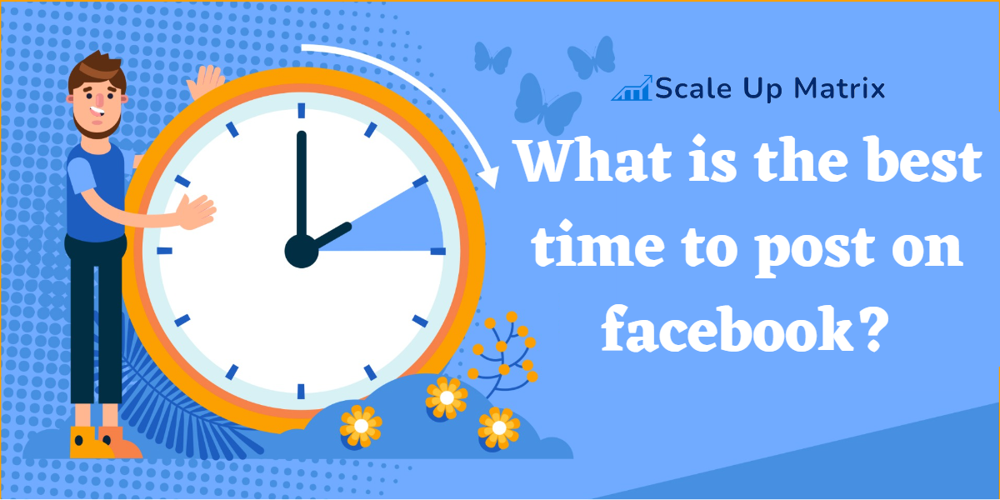
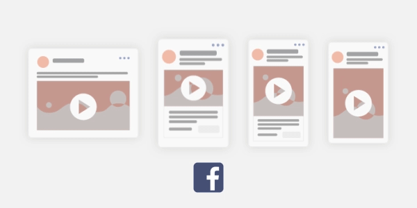

Facebook social media marketing is becoming more popular.
Facebook has maintained its position as a leading contender despite being essentially the origin of social media marketing. Greater than any other social media network in terms of daily visitors.
Facebook has over two billion active users, therefore it has every audience imaginable, including your potential consumers.
And it would be crazy for any marketer or owner of a small business to ignore the fantastic marketing chances offered by this social network.
Are you prepared to rule in 2023? For five recommendations on how to dominate Facebook social media marketing this year, keep reading!
1. Align your marketing approach with your main business objectives
When it comes to social media marketing on Facebook, the options are nearly limitless. It's simple to become disoriented or overloaded.
Therefore, it is essential to start by integrating your social media marketing plan with your company's objectives.
It's better to maintain your objectives as precise as you can.
Here are a few illustrations of how to successfully align your company's objectives with Facebook marketing techniques:
-
Consider using Facebook page like advertisements to increase your Facebook fans and followers if you are starting a new business and want to increase brand exposure.
Additionally, you should interact with your Facebook audience by publishing regular, excellent content.
You can boost postings to promote greater participation and track outcomes using predetermined criteria.
A target of 300 new followers every month or a minimum of ten likes on each post are two examples.
-
Think about boosting a Facebook event page if your objective is to encourage attendance at a particular event.
Keep a clear target in mind for the number of attendance you want and the amount of promotion you are willing to spend to attract each additional participant.
-
If your only objective is to boost your e-commerce store's profits and raise sales of the products you offer.
The ideal option for you would be a conversion campaign on Facebook Ads Manager.
Make careful to monitor the ROI and cost per conversion of your marketing activities.
- Do you prefer a long-term or short-term plan?
- What can you do to make your company better than it was the previous year?
- What can you do to set your company apart from the competition?
Your call to action and appropriate goals for Facebook social media marketing can be determined with the help of the answers to these questions.
Summary
Aligning your social media marketing plan with your company's objectives is the best place to start.
2. Make sensible investments
Anyone who has a Facebook business page is likely aware of the gradual decrease in organic reach over the past two years.
Currently, unless they are promoted, Facebook business page postings are frequently only seen by 2% or less of their followers.
If no one will ever view your time-consuming and effective Facebook posts, such as infographics and templates, then there is no use in investing all your effort into making them.
Additionally, using Facebook groups is no longer very efficient.
It is getting more and more important to create advertising as Facebook's algorithm shifts toward a "pay to play" model.
And if you want your firm to prosper, make good financial decisions.
To be successful with social media marketing on Facebook and target the correct Facebook people, you must have an advertising budget.
But if you're not careful about how you use your Facebook budget, you may be wasting a lot of money with this marketing tool.
For instance, it makes no sense to spend $10 to promote each post to your 100 followers.
Prior to investing money in posts promoted to your followers, it is advisable to increase your following through the use of page like ads and posts promoted to external audiences.
With the help of page like advertisements and promoted posts, it is possible to gain followers and increase engagement on a budget that is not excessive.
But in order to be successful, advertisements meant to generate leads and sales typically cost more, particularly in highly competitive markets.
You have to be prepared to spend money in order to make money with conversion ads.
To secure a favourable return on ad spends, it goes without saying that profits must exceed expenses.
But occasionally, during the early stages of the optimization process, new campaigns must begin in the red.
Then work your way up to the break-even point and, eventually, profit.
If the Facebook advertising method does not produce a positive ROI right away, don't be concerned.
Finding the correct message and the best methods of audience targeting can often take months of A/B split testing!
But if you've completely optimised your strategy, Facebook may be a fantastic tool for generating leads at a reasonable price!
It might be time to hire a professional if your Facebook advertising are not functioning as well as you would like them to.
Our skilled advertising professionals have the expertise and abilities necessary to carry out a successful, goal-oriented Facebook advertising strategy.
Summary
To be successful with social media marketing on Facebook and target the correct Facebook users, you must have an advertising budget.
3. Make use of analytics and take notes
When it comes to Facebook social media marketing, it's easy to become lost.
The good news is that there are several internal road maps to support your success!
Many generic statistics that make generalizations, such as Wednesday and Thursday being the best days to post on Facebook, are available online.
These statistics are an excellent place to start. But because every company is unique, following basic guidelines might be harmful.
Real-time social analytics tools can help you make sure that your social media marketing plan is optimised depending on what works best for your specific company.
It's well known, for instance, that the ideal times of day to post for the most engagement are:
- When people first awaken in the morning
- When people take their lunch breaks in the afternoon
- Evenings when folks finish their work
However, not all businesses can benefit from that rule.
What if you are based in the United States but have the majority of your fans and clients in Asia?
In order to take into account the periods when your particular target group is most likely to be engaged online, you would need to adjust your messaging and publishing approach.
Similar to this, your target group may have a completely different workday from the typical office worker if they are retail employees or security guards.
By experimenting with various posting times and days and examining which posts get the greatest interaction.
You can gain a better understanding of what posting schedule is most effective for your business.
This applies to more than simply posting days and times. Additionally, you want to pay attention to the kinds of postings that get the most response from your followers.
Do people react favourably to posts that include open-ended questions?
What about article sharing or giveaways?
Pay close attention to every aspect of the posts that get the greatest interaction and figure out how to modify subsequent posts as necessary.
Focus on more lifestyle photos with people if, for instance, posts with images of people do better than posts with landscapes.
Similarly, you could find that sharing of articles from particular websites receive a lot of likes and comments.
In the future, think about sharing more information from the same source.
Analytics-based Facebook ad optimization is also important. Installing Facebook Pixels is necessary if you have a landing page in order to properly track KPIs.
Your remarketing ad campaigns will benefit from this as well.
Facebook Advertising Manager also makes it simple to track information and modify your ads accordingly.
Cost per conversion, relevancy ratings, and cost per click are a few crucial variables to consider.
The distinction between an ad's reach and impressions is another important consideration.
It could be time to update your adverts or increase your audience if the impressions exceed the reach by more than three times.
Additionally, Facebook Ads Manager provides much more comprehensive data to aid in Facebook Ads optimization depending on the demographics that produce the majority of your results.
These demographics cover a wide range, from the age ranges and genders of the individuals who interact with your ads to the devices and operating systems they use.
You can then design your own personalized audiences using these demographics.
If you don't know where to begin with your Facebook social media marketing.
Don't be hesitant to split test a variety of ideas, and then modify your plan of action in light of the findings.
Even if your marketing strategy is reliable, you may always try or tweak something new.
Pay attention to potential causes if you detect even a modest decline in engagement or an increase in your average cost per lead.
People are destined to repeat their mistakes if they don't learn from them.
Facebook offers its own metrics that might guide your future judgements about your marketing plan.
But many marketing firms, like Scale Up Matrix, can provide you with more advanced and powerful information.
They can also assist you in comprehending the facts and adapting your strategy accordingly.
Summary
To determine what posting schedule is most effective for your business, try out a variety of posting times and days.
4. Make use of videos
According to studies, video will make up 85% of all Internet traffic by 2023.
You might want to rethink your Facebook marketing approach if it doesn't incorporate video content.
For social media marketing on Facebook, eye-catching photographs are no longer sufficient.
If a picture is worth a thousand words, a video is worth a million!
Video currently dominates both Facebook posts and advertisements.
Video marketing is a significant component of 82% of business owner's overall marketing plans.
You already lag behind your rivals if your Facebook strategy does not incorporate video content.
In terms of engagement, video performs better on social media than still photographs.
Additionally, some individuals think that Facebook videos have a greater organic reach than postings that are only text or image-based.
Videos can help customers trust your company. Consumers report that videos increase their confidence while making online purchases in the amount of 57%.
Videos are especially good at explaining difficult ideas in ways that still photos simply cannot.
Consider this: if you have a novel, inventive product, customers might not be able to comprehend how it functions from a picture of it.
People are more likely to desire to purchase your product if you can quickly and simply demonstrate how to utilise it in a video.
With an average click through rate higher than all other ad forms, video advertisements consistently outperform all others.
Amazingly, video ad engagement rates are typically three times greater than non-video ad engagement rates!
Video Length
If you plan to use Facebook video advertisements as part of your social media marketing strategy, keep your videos brief.
The ideal length for video advertising is often between 15 and 30 seconds.
A shorter film increases the likelihood that more of your viewers will see it through to the end.
You might not be able to convey your entire point if your video advertisements are too long.
Similarly, it's advisable to place the call to action in the centre of your video advertisements.
By doing this, you can captivate interested viewers before they browse down their newsfeed again.
The CTA may not be seen by many people if it is placed at the end of the film.
Thumbnails
Keep an eye out for thumbnails. Facebook has autoplay video functionality, but many users disable it.
Even if your video does display in their newsfeed, those users are likely not to watch it at all if the thumbnail is unappealing.
In fact, studies have shown that the thumbnail image is what most people use to decide whether or not to watch your movie.
Therefore, you must choose an interesting and attractive image.
It should be clickable. If not, viewers will simply scroll over your video, regardless of how awesome you believe it is.
To persuade viewers to watch your video, use a relevant but engaging thumbnail.
Just make sure there isn't too much text in the thumbnail!
Using subtitles can make this challenging at times.
However, Facebook video ad thumbnails must adhere to the same guidelines as Facebook picture ads.
Ads with more than 20% text may have their reach reduced or may possibly be completely rejected.
There are a few more tips you should be aware of if you use videos for Facebook social media marketing.
Sound & Subtitles
85% of social media videos are viewed without sound!
This means that for your Facebook videos to be successful, they must be able to communicate a message without the aid of sound.
It might be essential to use subtitles to do this. Additionally, you can improve the accessibility of your movies for people who have trouble digesting audio.
Only a small portion of viewers are likely to understand your video if it isn't clear without the use of sound.
Additionally, many videos are not finished being watched. When it comes to composing your video script, take into account the conventional "pyramid style."
Since it is quite possible that most viewers won't stick around for even a brief video's conclusion, the most significant and attention-grabbing material should come first.
Video Format
One final piece of advice is to pay special attention to how your Facebook videos are formatted. Particularly on mobile platforms, square videos typically perform the best.
Choose the vertical format instead of the horizontal one if making a square movie is just not possible.
So what types of videos should you post on your Facebook?
Excellent concepts for videos include:
- Describe the product or service that your company provides.
- Facebook Live videos of your staff' behind-the-scenes activities.
- video testimonials from happy customers.
- If your business is a B2B one, a promotional video.
Even though high-quality social media video production is sometimes more expensive, it is ultimately worthwhile!
However, with the advancement of smartphone technology, video production is becoming simpler and more accessible.
That said, as smartphone technology advances and a growing variety of video editing and animation creation software emerges, video production is getting simpler and more accessible.
Summary
You already lag behind your rivals if your Facebook strategy does not incorporate video content.
5. Work with a marketing agency
Hiring a marketing agency is our final and most crucial advice for becoming successful with social media marketing on Facebook.
Facebook is continuously changing, and this trend doesn't seem to be slowing down anytime soon.
It can be a full-time job to stay on top of the platform's ever-changing rules and features.
You're occupied managing your company. We understand.
Why not let someone whose job it is to stay current with Facebook's ongoing evolution handle your company's social media marketing needs?
As was noted before, social media marketing companies have access to additional metrics that go well beyond what you can find out through Facebook insights alone.
A seasoned professional may also assist you in modifying your approach using data that, on its own, might be highly daunting or confusing.
Social media marketing agencies not only improve your Facebook marketing with high-quality statistics, but they also save you time and money!
By handling time-consuming tasks like responding to comments and messages, moderating social media posts, setting up Facebook marketing campaigns, and scheduling content postings, they free up their time.
They can also help you save money by improving the ROI of your advertising initiatives and their effectiveness.
Additionally, you won't need to recruit any full-time staff to handle your company's marketing requirements.
Summary
You'll have more time to focus on operating your business if you hire a company to handle your social media marketing on Facebook.